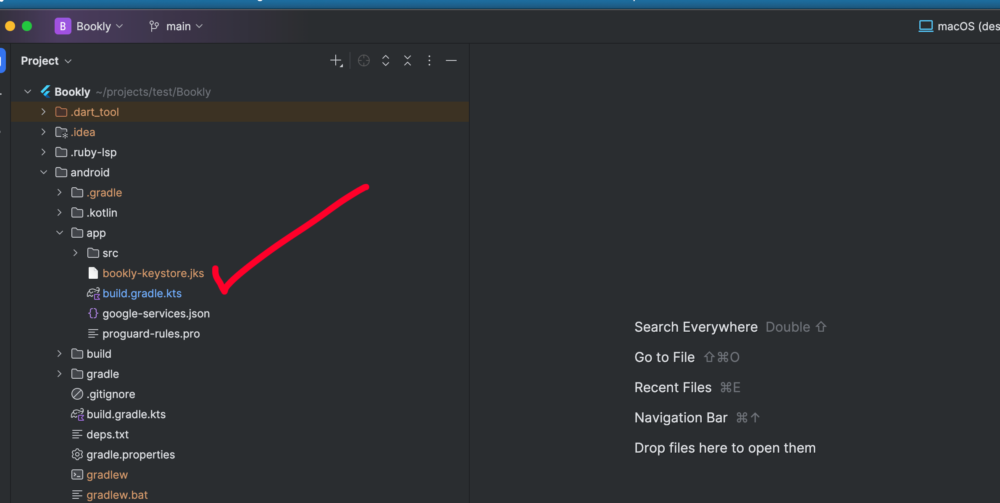
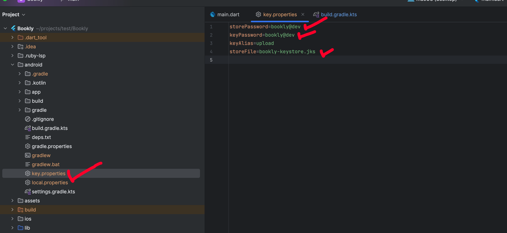
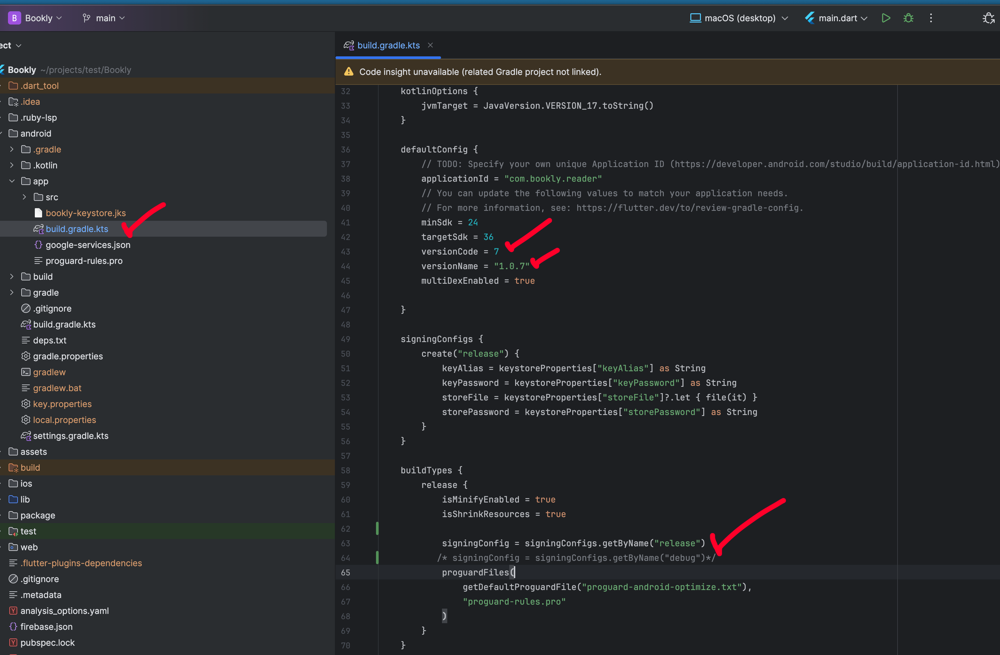
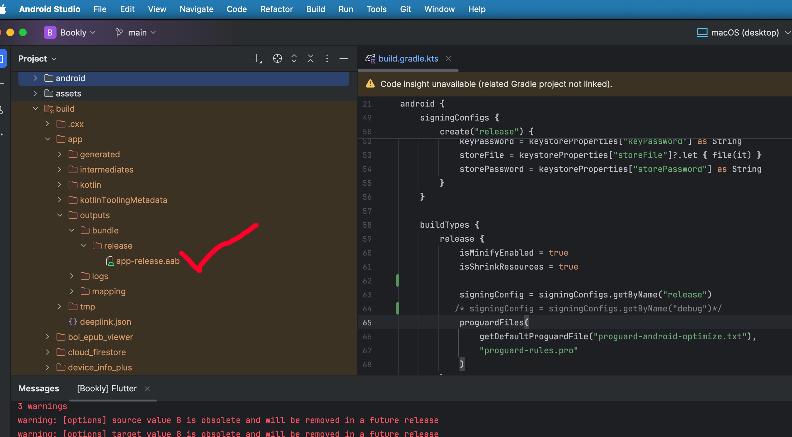

Welcome to the official customization documentation for Bookly. Please follow the setup guide below before modifying the source code.
1. Prerequisites
For optimal compatibility and performance, we highly recommend using the exact versions listed below.
Flutter SDK
Min: 3.38.x
Java Version
Java 21.0.9
CocoaPods
Min: 1.16.2
Xcode
Min: 16.x
Supported IDEs
Android Studio / VS Code
Important: It is highly recommended to use Java 21.0.9 for your Android projects to avoid build errors and ensure optimal compatibility with the app's dependencies.
Need Help? If you are facing any version-related issues, please reach out to us directly! We are happy to help you. Go to the Support Section →
2. Environment Setup
Select your operating system below to view the setup instructions.
Android Studio Setup
Download Android Studio from the official page. We recommend setting your system Java environment to Java 21.0.9.
Run the downloaded executable (e.g., android-studio-ide-<version>-windows.exe) and follow the installation wizard.
Launch Android Studio and allow it to download additional SDK components.
Optional: Set up an emulator through the AVD (Android Virtual Device) Manager.
Extract the zip file to a location on your machine (e.g., C:\flutter).
Add to System Path: Right-click "This PC" > Properties > Advanced system settings > Environment Variables. Find the "Path" variable, click Edit, and add your flutter\bin directory path.
Open Command Prompt and run flutter doctor to verify installation.
IDE Configuration
Open Android Studio.
Go to File > Settings > Plugins > Marketplace.
Search for and install both the Flutter and Dart plugins.
Need Help? If you are facing any environment setup related issues, directly reach out to us! We are happy to help you. Go to the Support Section →
3. Change Android Package Name
First, you have to find out the existing applicationId. You can find it out from the top of the /android/app/build.gradle.kts file.
Now select the application ID and press command + shift + r or for Windows ctrl + shift + r, place your preferred package name in the replace input box, and then click on the Replace All button.
4. Firebase Setup
Important: You should only add the downloaded Firebase JSON/Plist file. There is no change needed in any other files in the project like build.gradle or others.
For Android: Go to /android/app/src/main/res and replace all mipmap folders with your <generated icon>/android folder.
For iOS: Go to /ios/Runner and replace the existing Assets.xcassets folder with your generated Assets.xcassets folder.
8. API Customization
To connect the Bookly app to your own backend server, you must update the API endpoint configurations.
Navigate to <project>/lib/core/network and open the api_endpoints.dart file.
Replace the default baseUrl and searchApi strings with your own backend URLs.
Update the remaining API paths (like homeApi, categoriesApi, etc.) to match your backend routing structure.
Important: Ensure that your custom backend API returns responses in the exact same JSON format and data structure as the default Bookly API, otherwise the app will not parse the data correctly.
9. Localization (Language Customization)
Bookly supports multi-language capabilities. You can easily add new languages, remove existing ones, or set a default app language by following these steps.
Add a New Language
Go to <project>/lib/core/localization/translations.
Create a new Dart file modeled after an existing one (e.g., if you are adding French, you can name it fr_fr.dart).
Copy the code structure from an existing translation file (like en_us.dart) into your new file.
Rename the map variable (e.g., from enUS to frFR), and translate all the string values on the right side of the colons to your new language.
Once your translation file is ready, navigate to <project>/lib/core/localization/config/language_config.dart.
Locate the languages list inside the LanguageConfig class.
Add a new LanguageModel block to this list, filling in your language name, country code, and referencing the translation map variable you just created.
Set the Default Language
The app automatically uses the first language in the languages list as the default.
To set your preferred language as the default, simply move its corresponding LanguageModel to the very top of the list in language_config.dart.
Remove a Language
To remove a language from the app, open language_config.dart and delete its LanguageModel from the list.
For clean code, you can also delete the corresponding translation Dart file from the translations folder.
10. AdMob Customization
To start earning revenue through ads, you need to integrate your own AdMob Unit IDs for both Android and iOS.
CRITICAL WARNING: For development, you do not need to set up your real AdMob account. You must only configure AdMob with your real production IDs right before publishing your app to the App Store or Play Store. If you run the app during development and testing using your live production AdMob configuration, it will generate invalid traffic and your AdMob account will likely be permanently suspended. Always use Google's provided test IDs during development.
Update AdMob Unit IDs
Open the configuration file located at <project>/lib/core/config/app_config.dart.
Locate the AdMob variables section within the AppConfig class.
Replace the default test IDs with your own production AdMob Unit IDs for both Banner and Rewarded ads.
Need help creating Ad Unit IDs?
If you do not have an AdMob account or need help generating Ad Unit IDs, you can watch the video below for a clear understanding of the account creation process.
Note: The video below shows complete ad integration coding for Flutter. You only need to watch it to understand how to create your AdMob account, add your apps, and generate your Banner and Rewarded Ad Unit IDs. Do not follow the coding steps in the video, as the ad implementation is already fully integrated into the app.
Bookly uses RevenueCat to handle In-App Purchases (subscriptions and one-time purchases) seamlessly across Android and iOS platforms. Follow these steps to configure your products.
Update RevenueCat API Keys
Open your app configuration file at <project>/lib/core/config/app_config.dart.
Replace the revenuecatAndroidKey and revenuecatIOSKey values with your actual API keys from your RevenueCat dashboard.
Create Products in Google Play Console (and App Store)
Log into your Google Play Console (and repeat similarly for App Store Connect).
Create an In-App Product for your one-time purchase.
Create a Subscription for your recurring plans.
Connect Stores to RevenueCat
Before importing products, ensure your app stores (Google Play & App Store Connect) are properly linked to RevenueCat.
Import Products & Configure Offerings in RevenueCat
Import the products you created in the Play Console/App Store into your RevenueCat account.
Set up your Entitlements.
CRITICAL: Ensure that your Entitlement Identifier in RevenueCat matches exactly what is shown in the screenshot below.
Configure your Offerings.
CRITICAL: Ensure that your Offering IDs in RevenueCat match exactly what is defined in your app_config.dart file (e.g., bookly_subscriptions and bookly_onetime).
12. Build and Release
Build for Android (APK)
Run the following command to build the APK:
flutter build apk
This command will compile your Flutter code and generate the APK file. You can find the APK in the build/app/outputs/flutter-apk directory inside your project folder. The APK file will be named something like app-release.apk or app-debug.apk.
Prepare for Google Play Store (App Bundle)
Before deploying to the Play Store, additional configuration is needed. You must create an upload keystore.
1. Create an upload keystore
Run the following command at the command line. On macOS or Linux, use the following command:
Important: After running this keystore generation command, you need to enter some information. Make sure the keystore password is set carefully.
2. Replace the Keystore File
After generating upload-keystore.jks, replace the existing project bookly-keystore.jks with your new upload-keystore.jks in the <project>/android/app directory.

3. Update Key Properties
Update storePassword, keyPassword, and storeFile with your own credentials in <project>/android/key.properties.

4. Update App Version
Update your app version in <project>/android/app/build.gradle.kts.

5. Generate the App Bundle
Now you have completed all the release configurations. Generate the app bundle using the following command:
flutter build appbundle
After a successful build, you will find your app bundle in <project>/build/app/outputs/bundle/release/app-release.aab. Now you can upload it to your Google Play Console.

Build for iOS
There is no general way to generate apps for iOS locally without the Apple ecosystem. Apple doesn’t allow you to install apps via direct download. If you want to install it on your iOS device for testing, you can run it directly using Xcode. For deploying to production, please follow the official Flutter documentation here: https://docs.flutter.dev/deployment/ios
Run on a Physical iOS Device
Configure Xcode: Open Xcode and go to Xcode > Settings... > Accounts. Sign in with your Apple ID (create a free account at developer.apple.com if needed). Add your Apple ID and select your team (usually your personal name for free accounts).
Enable Developer Mode (iOS 16 and later): On your iOS device, go to Settings > Privacy & Security. Scroll to Developer Mode and toggle it ON. Restart the device if prompted.
Trust the Developer: Connect your iOS device to your Mac via a USB cable. On the device, you may see a prompt to “Trust This Computer?” Tap Trust and enter your passcode. In Xcode, open Window > Devices and Simulators. Select your device and ensure it’s listed as connected.
Verify Device Detection: Run the following command in your terminal:
flutter devices
This lists your iOS device (e.g., iPhone 14 (ios)). If the device doesn’t appear, check the USB connection and ensure Xcode recognizes the device.
Run the App: In your Flutter project directory, run:
flutter run
If multiple devices are connected, specify the device:
flutter run -d iPhone-14
Example: Running on an iPhone 13
Connect the iPhone to your Mac.
Enable Developer Mode in Settings > Privacy & Security.
Trust the computer when prompted.
Run flutter devices to confirm detection (e.g., iPhone 13 (ios)).
Execute:
flutter run -d iPhone-13
Helpful Resource: For a more detailed guide on running Flutter on physical devices, check out this excellent article: Running Flutter on a Physical Device.
13. Support
If you need help, reach out using any of the channels below.


5. Social Sign In Config
To enable social authentication methods for your app, you need to configure the providers in your Firebase console.
You need to place your Apple Service ID and Redirect URL in the project configuration file located at
lib/core/config/app_config.dart.For detailed instructions on how to set up your Service ID and Redirect URL, please follow this guide: